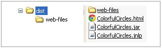
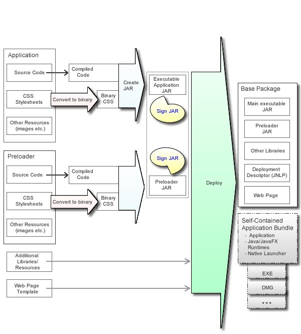
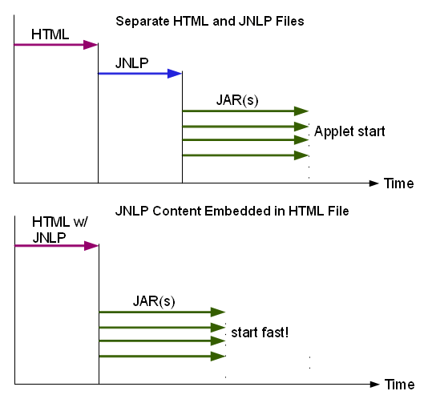

This topic provides an overview of Java packaging and tools.
This topic contains the following sections:
A properly packaged application runs in one or more of the following deployment modes:
As a standalone application, using the system JRE
As a self-contained application, using a private copy of JRE
As a Java Web Start application, using the system JRE
Embedded in a web page, using the system JRE
By default, Java packaging tools produce a package that includes everything needed to provide a good user experience for various user environments, including the following functions:
Ensure that the required JRE is installed.
Automatically download missing dependencies, or offer to install them as needed.
Provide visual feedback to the user while the application is loaded.
Show descriptive error messages.
Java application packages work in the following execution environments without requiring modifications:
Launch from the command line using the Java launcher.
Double-click the JAR file.
Double-click the self-contained application launcher.
Embed the application in a web page.
Optionally, Java packaging tools can produce self-contained application packages that simplify redistribution by avoiding dependencies on external software. For more information about self-contained application packages, see Chapter 7, "Self-Contained Application Packaging."
The Java application package that is generated by default includes the following items:
Executable application JAR file, which contains application code and resources and can be launched by double-clicking the file
Additional application JAR and resource files
Deployment descriptor for web deployment, which is kept in the JNLP file
HTML file that contains sample JavaScript code to embed and launch Java content from a web page
Figure 5-1 shows an example of the structure of a base JavaFX application package. By default, NetBeans IDE also includes a copy of other support files in the web-files folder. However, for production, using a public copy of the dtjava.js file is recommended because the public versions is always up to date.
Figure 5-1 Example of a Package for Web Deployment
The Java Packager tool added several steps to the build process, which simplify the packaging of your Java applications. These steps are shown in Figure 5-2.
Figure 5-2 The Build Process for Applications
The additional steps in the process are marked with colored arrows:
(Optional, JavaFX only) Convert style sheets to binary form.
Converts CSS files to binary form to reduce parsing overhead at application runtime.
Create JAR
Packages code and resources needed for the JavaFX application into a JAR file and embeds the preloader JAR, if requested.
See Section 5.5, "Create the Main Application JAR File."
For Java applications, the jar command is recommended for creating your JAR file, instead of the Java Packager.
Sign the JAR files
Signing JAR files is required if your application is embedded in a web page or is launched from a browser.
Signs the JAR files using a different method than the jarsigner tool. This method reduces the JAR size overhead for signing, which improves the download time.
Run the Deploy task
Assembles the application package for distribution. By default, the deploy task generates the base application package, but it can also generate self-contained application packages, if requested. See Section 5.7, "Run the Deploy Task or Command" and Chapter 7, "Self-Contained Application Packaging."
The recommended way to package Java applications is to use a collection of Ant tasks (ant-javafx.jar), which are provided with the JRE.
NetBeans IDE uses these Ant tasks to package JavaFX and Java SE projects. Embedded packaging support in NetBeans IDE covers most of the typical use cases. However, if you need something special, you can tune packaging by adding custom packaging hooks to the build.xml file, for example, as a -post-jar target.
Most of the other popular IDEs can easily use custom Ant build scripts. Other popular build frameworks, for example Maven or Gradle, support integration with Ant also.
The JRE includes a command-line packaging utility, javapackager, which can be used for simple packaging tasks. Note that javapackager is a convenience utility and does not provide as much flexibility or as many options as Ant tasks.
Table 5-1 summarizes how to accomplish the build steps using the various packaging tools available. Note that javapackager also provides a -makeall macro command to create a complete application package for simple applications. For more information, see Chapter 9, "The Java Packager Tool."
Table 5-1 Java Packaging Tasks and Tools
| Task | Java Packager Library Ant Task | Java Packager Tool Command | NetBeans IDE |
|---|---|---|---|
|
Convert any CSS files to binary format (See Section 5.4, "Style Sheet Conversion.") |
|
javapackager -createbss |
Packaging category in Project Properties
|
|
Create a JAR archive (See Section 5.5, "Create the Main Application JAR File.") |
|
javapackager -createjar |
Occurs by default with a Build command, using the configuration in Project Properties. |
|
Sign a JAR archive as one binary object (See Section 5.6, "Sign the JAR Files.") |
|
javapackager -signJar |
Deployment category in Project Properties
|
|
Assemble application package for deployment (See Section 5.7, "Run the Deploy Task or Command") and Chapter 7, "Self-Contained Application Packaging." |
|
javapackager -deploy |
Base application package is produced by default with a Build command. To produce self-contained applications, see Section 7.3.2, "Basic Build." |
Converting style sheets to binary format is optional, but improves application performance. This is especially noticeable on larger CSS files.
To use a binary CSS file, refer to the binary file instead of the CSS file in your code, as shown in Example 5-1:
Example 5-1 Using a Binary Stylesheet
scene.getStylesheets().add(this.getClass().getResource
("mystyles.bss").toExternalForm());
The following methods are available for converting style sheets to binary:
Ant task: See Convert CSS Files to Binary
Java Packager tool: See the -createbss command in the javapackager reference for Windows or Solaris, Linux, and OS X.
NetBeans IDE: Convert the style sheet by selecting Binary Encode JavaFX CSS Files in the Packaging category of Project Properties.
In addition to application classes and resources, you can provide the following information when you create the main application JAR file:
Platform requirements
Required version of the JRE
Required Java VM arguments
The following details about the application:
Name of the main application class (Required)
Name of the JavaFX preloader class, if a preloader is provided
Details about application resources, if applicable
Set of class files and other resources included in the JAR file
List of auxiliary JAR files needed by the application, including a custom JavaFX preloader JAR file, if needed
The use of Java packaging tools to create the main application JAR file is very important for packaging JAR files and self-contained applications that can be started with a double-click. The main application JAR file includes a launcher program that takes care of the bootstrap launch, which improves launch by performing the following tasks:
Checks for the JRE
Guides the user through any necessary installations
Sets the system proxy for your application
|
Note: If you have a JavaFX preloader, as shown in Figure 5-2, create a separate JAR file with the preloader resources, using any of the packaging methods described. For more information, see Chapter 13, "Preloaders for JavaFX Applications." |
The following methods are available for creating the main application JAR file:
Ant task: See <fx:jar> Usage Examples.
Java Packager tool: See the -createjar command in the javapackager reference for Windows or Solaris, Linux, and OS X.
NetBeans IDE: Automatically creates the JAR file when you specify this information in the project's properties.
To use traditional methods to sign JAR files, see the steps for code signing in the Java Tutorial, and the description of the standard Ant signjar task for information. The traditional method is recommended for Java applications.
Java packaging tools provide an alternative signing method that helps to reduce the size overhead of signing the JAR file. Using this method, you sign the JAR file as one large object instead of signing every JAR entry individually. This method can save up to 10 percent of the total JAR size.
To use the alternative signing method, you need the keystore and signing key. See the Java Tutorial on generating keys for instructions.
The following methods are available for signing the JAR files:
Ant task: See <fx:jar> Usage Examples
Java Packager tool: See the -signJar command in the javapackager reference for Windows or Solaris, Linux, and OS X.
NetBeans IDE: Enable signing by selecting the Request unrestricted access check box in the project properties. To sign with a specific certificate, click Edit next to the check box.
|
Note: All JAR files must be signed or unsigned in the context of a single deployment descriptor file. If you need to mix signed and unsigned JAR files, use an additional Ant task to generate an additional deployment descriptor for each JAR file. These additional deployment descriptors are called extension descriptors. Use <fx:resources> to refer to the extension descriptors when the main descriptor is generated. For an example of how to do this, see Using <fx:resources> for Extension Descriptors. |
A basic distribution package consists of the following items:
The main executable JAR file
(Optional) A set of auxiliary JAR files, including a JAR file with JavaFX preloader code
A deployment descriptor, defining how to deploy the application
Either a basic HTML file with sample code to embed the application into your own web page, or a custom web page that is the result of preprocessing an HTML template
Java packaging tools can also package the application as a self-contained application bundle. This option is disabled by default. For more information, see Chapter 7, "Self-Contained Application Packaging."
To assemble the distributable package, use one of the following methods:
Ant task: See <fx:deploy> Task Usage Examples.
Java Packager tool: See the -deploy command in the javapackager reference for Windows or Solaris, Linux, and OS X.
NetBeans IDE: Creates a distributable package every time the project is built. Packaging options are set in the project's properties.
The key part of this task is providing information to fill the deployment descriptor for web deployment. The following information is needed:
Entry points: the main application class, JavaFX preloader class, and other details
Defined as attributes of the <fx:application> tag.
Parameters to be passed to the application
Defined using <fx:param> and <fx:htmlParam> tags under <fx:application>.
The preferred application stage size
It is crucial to reserve the display area for embedded content.
Width and height are defined using width and height attributes in the <fx:deploy> tag for Ant tasks, the javapackager -deploy command in the javapackager tool for Windows or Solaris, Linux, and OS X, or in the Run category of NetBeans project properties.
A description of the application to be used in dialog boxes that the user sees during application startup
Defined using the <fx:info> tag.
Platform requirements, including the required version of the JRE and JVM settings
Defined using the <fx:platform>tag. For an example, see <fx:platform> Parameter to Specify JVM Options.
Desktop integration preferences of the application, such as adding a shortcut to the desktop or a reference to the Start menu.
Defined using the optional <fx:preferences> tag. See <fx:preferences> Usage Examples.
Permissions needed to run the application.
By default, web applications run in the sandbox. To request elevated permissions, use the <fx:permissions> tag.
The following types of resource files are supported:
JAR files
Native JAR files
JNLP files
Icons
License files
Data files
Every resource has additional metadata associated with it, such as operating system and architecture for which this resource is applicable, plus a priority preference defining the point in the application life cycle at which this resource is needed. Careful use of metadata can have a significant impact on the application startup experience. For a list of supported values, see Table 10-10.
All files in the resource set are copied to the build output folder. However, not all of the files are used in all execution modes, as described in the following paragraphs.
Regardless of execution mode, all regular JAR files from the resource set are added to the application class path.
Native JAR files and JNLP files are used only for web deployment. Additional JNLP files are typically used to refer to external JNLP extensions, or if the application itself is packaged as a set of components. See Using <fx:resources> for Extension Descriptorsin the JavaFX Ant Task Reference.
Native JAR files are used to deploy native libraries used by application. Each native JAR file can contain a set of native dynamic libraries and is inherently platform-specific. For more details, see Example 5-11 and Section 5.8.3, "Packaging Complex Applications."
License files are currently applicable to self-contained applications only, and are used to add a click-through license to installable packages. See Section 7.4, "Installable Packages."
Data files do not have special semantics, and applications are free to use them for anything. For example, if your application needs to bundle a movie file, then you can mark it as "data," and it is included in the application package.
For further details, see Table 10-10.
The Deployment Toolkit provides a set of hooks that you can use to customize the startup behavior when an application is deployed in the browser. Developers must install a callback function to the hook, so the hook is utilized by the Deployment Toolkit.
Chapter 19, "Deployment in the Browser" describes in detail what hooks are available and how to use them in the code. However, to ensure that the hooks are correctly installed, they also must be specified at packaging time.
To specify callbacks, list them in the <fx:callbacks> tag under <fx:deploy>. Add an <fx:callback> entry for every callback that you want to install, and specify the name of the hook in the name attribute. The content of the <fx:callback> tag is the JavaScript function to be used. You can use a full function definition, or refer to a function defined elsewhere.
The following methods are available for packaging custom JavaScript actions:
Ant task: See <fx:jar> Usage Examples.
Java Packager tool: See the -deploy command in the javapackager reference for Windows or Solaris, Linux, and OS X.
NetBeans IDE: Add callbacks in the Deployment category of Project Properties. Click the Edit button to the right of Custom JavaScript Actions.
By default, Java packaging tools generate a simple web page with a placeholder for the embedded application. You can manually copy code from this generated page to your web page, but this is error prone and time consuming if you need to do this often.
Java packaging tools also support injecting required code into an existing web page through the use of an input template. This technique is especially useful when the application is tightly integrated with the web page, for example if the application uses JavaScript to communicate with the web page, or if callbacks are used and their code is kept in the web page itself.
An input template is an HTML file containing markers to be replaced with JavaScript or HTML code needed to deploy the application on the web page. Example 5-2 shows an example of an input template for a JavaFX application.
Example 5-2 HTML Input Template
<html>
<head>
<title>Host page for JavaFX Application</title>
#DT.SCRIPT.CODE#
#DT.EMBED.CODE.ONLOAD#
</head>
<body>
<h1>Embed JavaFX application into existing page</h1>
<!-- application will be inserted here -->
<div id="ZZZ"></div>
</body>
</html>
#DT.SCRIPT.CODE# and #DT.EMBED.CODE.ONLOAD# are markers that are substituted with JavaScript and HTML code when the template is processed. Markers have the form of #MARKERNAME# or #MARKERNAME(id)#, where id is the identifier of an application (specified using the id attribute of the <fx:deploy> tag if you are using Ant), and MARKERNAME is the type of the marker. If id is not specified, then MARKER matches any application. For a list of supported markers, see <fx:template> in the Ant task reference.
Templates can be used to deploy multiple applications in the same page. Use the full form of the marker including application ID (an alphanumeric string without spaces), and pass the partially processed template file when packaging each application to insert.
Example 5-3 shows an example of a template that is used to deploy multiple applications.
Example 5-3 An Input Template Used to Deploy Multiple Applications
<html>
<head>
<title>Page with two application</title>
<script src="#DT.SCRIPT.URL#"></script>
<!-- code to load first app with id 'firstApp'
(specified as attribute to fx:application) -->
<!-- #DT.EMBED.CODE.ONLOAD(firstApp)# -->
<!-- code to load first app with id 'secondApp' -->
<!-- #DT.EMBED.CODE.ONLOAD(secondApp)# -->
</head>
<body>
<h1>Multiple applications in the same page</h1>
JavaFX app: <br>
<!-- First app. Ant task need to use "ZZZ_1 as placeholderId -->
<div id="ZZZ_1"></div>
Another app: <br>
<!-- Second app. Ant task need to use "ZZZ_2 as placeholderId -->
<div id="ZZZ_2"></div>
</body>
</html>
Example 5-3 demonstrate one useful feature of the template processor, which is that the markers can be placed in the HTML comments. If the comment does not contain anything other than marker code, then the comment tags are removed from the content in the resulting HTML. This feature keeps the HTML in the template page well formed.
The following methods are available for using templates:
Ant task: Add a template tag. See <fx:jar> Usage Examples.
Java Packager tool: See the -deploy command in the javapackager reference for Windows or Solaris, Linux, and OS X.
NetBeans IDE: Specify the input HTML template file in the Run category of Project Properties.
This section presents several examples for typical deployment tasks.
The examples use Ant APIs, but in most cases the same result can be achieved using the Java Packager tool. See Chapter 10, "JavaFX Ant Tasks" and Chapter 9, "The Java Packager Tool."
Java and JavaFX applications support two types of application parameters: named and unnamed (see the API for Application.Parameters).
Static named parameters can be added to the application package using <fx:param> and unnamed parameters can be added using <fx:argument>. They are applicable to all execution modes, including standalone applications.
Parameters can also be passed to Java and JavaFX applications from the web page that hosts the application using <fx:htmlParam>. <fx:htmlParam> is applicable to both embedded applications and Java Web Start applications.
Passing parameters from the HTML page is most useful if the parameters are dynamic. To use this technique, the following approach is recommended:
Use a web page template (see Section 5.7.4, "Web Page Templates") to provide JavaScript code to prepare dynamic parameters.
Pass JavaScript code as a value for <fx:htmlParam>, and specify escape="false". The code is evaluated at runtime
Example 5-4 shows the use of various parameter types:
Example 5-4 Using Various Parameter Types
<fx:application name="Test" mainClass="tests.Params">
<!-- unnamed parameters -->
<fx:argument>Arg1</fx:argument>
<fx:argument>Arg2 with spaces </fx:argument>
<!-- name parameters -->
<param name="sampleParam" value="Built with ${java.version}"/>
<param name="noValueParam"/>
<!-- parameters passed from HTML page -->
<htmlParam name="staticParamFromWebPage"
value="(new Date()).getTime()"/>
<htmlParam name="dynamicParamFromWebPage" escape="false"
value="(new Date()).getTime()"/>
</fx:application>
Does your application need a larger heap size? Do you want to tune garbage collector behavior, or trace class loading?
You can specify the required JVM options and set system properties using the <fx:jvmarg> and <fx:property> tags in your Ant task. These tags are applicable to all execution modes except standalone applications. You always get the default JVM if you double-click the JAR file, but you can tailor the JVM to your requirements if you are running a self-contained application, a Java Web Start application, or an application embedded into a web page.
If you use any non-secure JVM options or system properties, the application must have elevated permissions. A set of secure JVM command-line arguments and system properties is defined in the Java Web Start Developers' Guide.
In Example 5-5, the Ant task packages the application so that when the application is run, the JVM is launched with the following arguments:
-Xmx400 -verbose:jni -Dpurpose=sample
Neither -verbose:jni nor purpose are secure, so elevated permissions are required for Java Web Start and embedded execution modes.
Example 5-5 Specifying Custom JVM Options and Properties in the Ant Task
<fx:platform javafx="2.1+">
<fx:jvmarg value="-Xmx400m"/>
<fx:jvmarg value="-verbose:jni"/>
<fx:property name="purpose" value="sample"/>
</fx:platform>
If you require the capability to specify JVM options that a user can override, use the <fx:jvmuserarg> attribute in <fx:platform>, or for self-contained applications, use the -BuserJvmOptions attribute for the Java Packager tool. These attributes explicitly define an attribute that can be overridden by the user.
Example 5-6 Specifying Options that Users Can Override in an Ant Task
<fx:platform>
<fx:jvmuserarg name="-Xmx" value="768m" />
<fx:jvmuserarg name="-Xms" value="128m" />
</fx:platform>
If you are using the Java Packager tool to package a self-contained application, include the following attributes:
-BuserJvmOptions=-Xmx=768m
-BuserJvmOptions=-Xms=128m
In the examples, -Xmx768m is passed as a default value for heap size, and -Xms128m is passed as the default value for the initial heap size. The user can override these values in a user configuration file on Linux and OS X, or in the registry on Windows. The configuration file and the registry use the conventions of the Java Preferences API for location and format. Self-contained applications can use the UserJvmOptionsService API to enable users to set JVM options in the application. See Chapter 15, "Customizing JVM Options in Self-Contained Applications" for information about this API.
The node for the applications user preferences is based on the application ID, which is passed as -Dapp.preferences.id to the Application so it can provide a preferences UI, if required. If the preferences ID is not passed, the fully qualified main class name is used. The application can access the JVM user options with node -Dapp.preferences.id and key JVMOptions.
The following examples provide code for overriding the JVM heap size value of 768m to 400m on different platforms.
Example 5-7 Overriding Default Value on OS X
<?xml version="1.0" encoding="UTF-8"?> <!DOCTYPE plist PUBLIC "-//Apple//DTD PLIST 1.0//EN"
"http://www.apple.com/DTDs/PropertyList-1.0.dtd"> <plist version="1.0"> <dict> <key>JVMUserOptions</key> <dict> <key>-Xmx</key> <string>400m</string> </dict> </dict> </plist>
You can provide string substitution to the root of the install directory for parameters passed into the application. In particular, you can use the macro $APPDIR, which is the full path of the directory that contains the self-contained bundles that the bundler creates. In the following example, if the program is installed in C:\Program Files\myexample, then the macro $APPDIR expands to C:\Program Files\myexample\app (because the app directory is where the application resources are installed in this example).
Real-life applications often have more than just a single JAR artifact. They may have third-party libraries, data files, native code, and so on. For a complex application, you might need special packaging tweaks to support different execution modes.
The following suggestions are general guidelines for packaging complex applications:
Mark platform-specific resources accordingly.
For JAR file that a user can double-click, consider packaging everything into a single JAR file and loading native libraries and data files from inside that JAR file.
Alternatively, if you prefer to have multiple files:
Ensure that all dependent JAR files are listed in the <fx:resources> tag in the <fx:jar> task that creates the main JAR file.
List all data files and libraries in filesets with type="data" to copy them into the output folder.
Load native libraries and resources from locations relative to the main JAR file.
See the example <fx:jar> Ant Task for a Simple Application in the Ant Task Reference chapter.
The following guidelines are for self-contained applications:
Avoid packaging anything but the main JAR file using <fx:jar>.
List all dependent JAR files in the <fx:resources> section of <fx:deploy> and <fx:jar> for the main application JAR file.
Either use an explicit location relative to the application JAR file to load native libraries, or copy native libraries into the root application folder. Use type="data" to copy native library files.
See Example 7-4.
The following guidelines are for Java Web Start and embedded applications:
List all dependent JAR files in the <fx:resources> section of <fx:deploy>.
Wrap native libraries into the JAR files for distribution.
Use one JAR file per platform. Ensure that the JAR files contain only native libraries and that the libraries are all in the top-level folder of the JAR file.
See Example 5-11.
Example 5-11 Packaging Native Libraries into JAR Files
<jar destfile="${basedir}/build/native-libs-win-x86.jar"
basedir="native/windows/x86" includes="*"/>
<jar destfile="${basedir}/build/native-libs-win-x86_64.jar"
basedir="native/windows/x86_64" includes="*"/>
....
<!-- sign all jar files --->
<signjar keystore="test.keystore" alias="TestAlias" storepass="xyz123">
<fx:fileset dir="dist" includes="**/*.jar"/>
</signjar>
<!-- assemble package -->
<fx:deploy width="600" height="400"
outdir="${basedir}/${bundle.outdir}"
outfile="Demo">
<fx:info title="Demo app"/>
<fx:application name="${bundle.name}"
mainClass="${javafx.main.class}"/>
<fx:permissions elevated="true"/>
<fx:resources>
<!-- jar files with classes and shared data -->
<fx:fileset dir="dist" includes="*.jar"/>
<fx:fileset dir="dist" includes="lib/*.jar"/>
<!-- add native libs for deployment descriptor -->
<fx:fileset dir="build" type="native"
os="windows" arch="x86">
includes="native-libs-win-x86.jar"/>
</fx:fileset>
<fx:fileset dir="build" type="native"
os="windows" arch="x64"
includes="native-libs-win-x86_64.jar"/>
</fx:fileset>
...
</fx:resources>
</fx:deploy>
To size embedded applications relative to the size of browser window, use the embeddedWidth and embeddedHeight attributes in the <fx:deploy> task. These optional attributes are used only for embedded applications, and only in the generated HTML and Javascript code. Also note that width and height values in pixels are still required.
To fill the browser window completely, set embeddedWidth and embeddedHeight to "100%". This alone does not produce a perfect result, because scroll bars are added to the browser window for the following reasons:
The default HTML template has some other content.
The default style of HTML tags might reserve space for things like margins.
The resulting web page appears to be larger than the view area, and therefore the browser adds scroll bars.
The full solution consists of the following steps:
Specify embeddedWidth="100%" and embeddedHeight="100%" in the <fx:deploy> task. (See Example 5-12.)
Add a custom web page template. (See Example 5-13 and Section 5.7.4, "Web Page Templates.")
Reset the style of used HTML elements to ensure that the application is the only element in the view area.
Example 5-12 Packaging
<fx:deploy width="100" height="100"
embeddedWidth="100%" embeddedHeight="100%"
outdir="${basedir}/${dist.dir}" outfile="${application.title}">
<fx:application name="${application.title}"
mainClass="${javafx.main.class}"/>
<fx:template file="${basedir}/web/index_template.html"
tofile="${dist.dir}/TestApp.html"/>
<fx:resources>
<fx:fileset dir="${basedir}/${dist.dir}" includes="*.jar"/>
</fx:resources>
<fx:info title="${application.title}"
vendor="${application.vendor}"/>
</fx:deploy>
Example 5-13 Web Page Template (web/index_template.html)
<html>
<head>
<!-- This will be replaced with javascript code to embed the application -->
<!-- #DT.SCRIPT.CODE#-->
<!-- #DT.EMBED.CODE.ONLOAD#-->
<!-- Reset html styles to ensure these elements do not waste space -->
<style>
html, body {
margin: 0;
}
</style>
</head>
<body>
<!-- Application will be added to the div below -->
<div id='javafx-app-placeholder'></div>
</body>
</html>
Several options are available for improving application launch time for the first and subsequent launches of web applications.
|
Tip: While you are developing an application, you can disable optimizations to avoid unneeded complexity. Use optimizations at the final packaging stage. |
Every time a web application starts, both Java Web Start and embedded, a background update check is conducted for to determine if updates are required. By default, Java and JavaFX applications perform "lazy" update checks in the background while the application runs. This helps to avoid wait time to check for updates when the application starts. If updates are found, then the updates are used only after the application restarts. To switch between update modes, use the following methods in the Java packaging tools:
Ant task: See the updatemode attribute of the <fx:deploy> task.
Java Packager tool: See the -updatemode option of the javapackager -deploy command in the javapackager tool for Windows or Solaris, Linux, and OS X.
NetBeans IDE: Select Check for Application Updates in Background, In the Deployment category of Project Properties.
You can embed the content of the deployment descriptor into the HTML page, which helps to reduce the number of network connections needed to launch the application, as shown in Figure 5-3.
Figure 5-3 Embedding JNLP Content Reduces Network Connections
The original JNLP file is loaded in the background to perform application update checks.
The following methods are available for embedding the content of the deployment descriptor:
Ant task: See the embedjnlp attribute of the <fx:deploy> task.
Java Packager tool: See the -embedjnlp option of the javapackager -deploy command in the javapackager tool for Windows or Solaris, Linux, and OS X.
NetBeans IDE: The content is embedded by default.
If the application is signed, then this option embeds into the JNLP file a copy of the details of the certificate used to sign the JAR files. If the user needs to approve permissions, this certificate, followed by a security prompt, is shown while the application JAR files are being loaded, as shown in Figure 5-4.
Figure 5-4 Advantage of Embedding the Certificate in the Deployment Descriptor

The following methods are available for embedding the signing certificate into the deployment descriptor:
Ant task: See the cachecertificates attribute of the <fx:permissions> task.
Java Packager tool: See the -embedCertificates option of the javapackager -deploy command in the javapackager tool for Windows or Solaris, Linux, and OS X.
Reducing the JAR file size helps to reduce download time and improve startup time. See Section 5.6, "Sign the JAR Files."